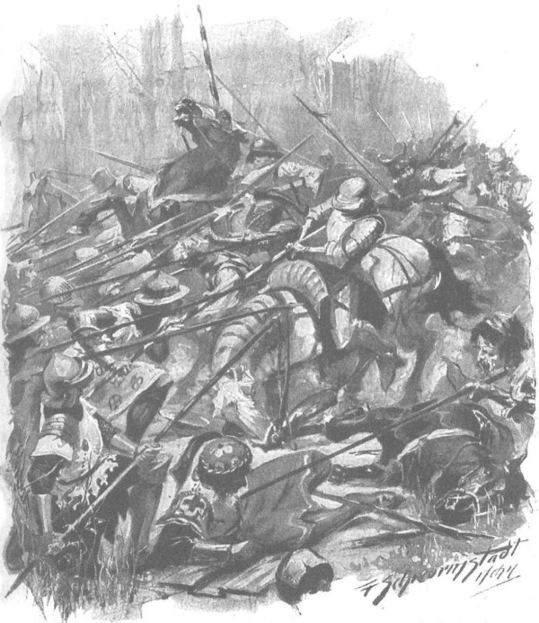

Zbyszko vội hỏi chúng đi ra sao, bao nhiêu đứa cưỡi ngựa, bao nhiêu lính bộ, và còn cách bao xa. Từ câu trả lời của người chiến binh Żmudź, chàng biết được rằng toán lính không quá một trăm năm mươi người, khoảng năm mươi kỵ binh, không phải do một hiệp sĩ Thánh chiến chỉ huy mà là một hiệp sĩ thế tục nào đó, chúng đi thành đội hình, kéo theo những chiếc xe rỗng, trên xe chở nhiều bánh xe. Dẫn đầu đoàn, đi trước cách khoảng hai tầm tên bắn, là toán vệ sĩ gồm tám người, thường xuyên sục sạo vào rừng và các lùm cây; chúng còn cách đây chừng phần tư dặm.
Zbyszko không thích việc chúng đi theo đội hình. Theo kinh nghiệm, chàng biết là nếu vậy sẽ rất khó đánh tan quân Đức, từng cụm lính sẽ biết cách giữ đội hình cầm cự, vừa rút lui vừa chia thành từng đơn vị theo kiểu heo rừng bị chó săn bao vây. Ngược lại, chàng vui mừng trước tin là chúng chỉ còn cách đây chừng phần tư dặm, vì chàng đoán chắc rằng toán quân phái đi trước đó đã bọc hậu được quân Đức, và trong trường hợp chúng bị thất bại thì sẽ không một tên nào chạy thoát. Về toán tiền trạm đi phía trước đoàn quân, chàng chẳng lo lắng nhiều, vì chàng đã biết trước rằng chúng sẽ hành quân như thế, nên đã ra lệnh cho các chiến binh Żmudź để mặc chúng đi qua, hoặc nếu có tên nào mò vào rừng kiểm tra thì phải im lặng hạ thủ từng tên một.
Nhưng mệnh lệnh sau cùng hóa ra là không cần thiết. Bọn địch đã tới ngay sát. Ẩn dưới hốc rễ cây sát gần với đường, những người Żmudź trông rõ đám bộ binh Đức khi chúng dừng ở khúc đường cong và nói chuyện với nhau. Chỉ huy là một tên Đức vạm vỡ, râu đỏ, đưa tay ra hiệu cho chúng im lặng, rồi chăm chú lắng nghe. Trong một khoảnh khắc, có thể thấy là hắn do dự, không biết có nên đi sâu dò xét khu rừng không, nhưng rốt cuộc, khi chỉ nghe thấy tiếng chim gõ kiến mổ đều đều, chắc hắn nghĩ rằng lũ chim không thể tự do đến thế nếu trong rừng có người đang ẩn nấp, thế là hắn vẫy tay rồi dẫn toán lính đi tiếp.
Chờ đến khi cả toán khuất hẳn sau chỗ đường ngoặt tiếp theo, Zbyszko mới dẫn đầu một toán người vũ trang đầy đủ lặng lẽ tiến sát con đường. Trong số họ có ông Maćko, chàng Séc, hai hiệp sĩ tự do xứ Łękawice, ba hiệp sĩ trẻ từ Ciechanów và hơn chục người dũng sĩ Żmudź khá nhất, khí giới đầy đủ nhất. Không cần phải ẩn nấp nữa, Zbyszko trù tính khi quân Đức đến, họ sẽ nhảy vọt ra giữa đường, tấn công chúng và xé nát đội hình. Nếu thành công, cuộc chiến sẽ biến thành một loạt các trận đấu tay đôi, chàng tin rằng những dũng sĩ người Żmudź sẽ đủ sức trị quân Đức.
Một lần nữa im lặng lại bao trùm, chỉ có tiếng xạc xào đơn điệu của rừng thẳm. Nhưng ngay sau đó, từ phía đông của con đường, vọng đến tai các chiến binh tiếng người nói xao xác. Thoạt tiên còn lộn xộn và khá xa, dần dần chúng gần lại và rõ ràng hơn. Ngay lúc ấy Zbyszko liền dẫn đội quân của mình tiến ra giữa đường và xếp thành hình mũi nêm. Chính chàng đứng hàng đầu, sau lưng là ông Maćko và chàng Séc. Tiếp theo là hàng ba người, sau đó là hàng bốn. Họ được trang bị rất tốt: chỉ thiếu mỗi ngọn đòng, tức là cây thương dài của giới hiệp sĩ, bởi mang nó theo rất khó khăn khi hành quân qua rừng; trái lại, họ đã có trong tay những thanh giáo ngắn và nhẹ của xứ Żmudź để tấn công đợt đầu, cùng gươm và rìu chiến để đấu tay đôi.
Hlava vểnh tai lắng nghe, rồi thì thầm với ông Maćko:
- Chúng nó hát, chết mẹ chúng đi!
- Tôi thấy lạ là có rừng che khuất tuốt đằng kia, mà đến tận bây giờ ta vẫn chưa trông thấy chúng. - Ông Maćko nói.
Zbyszko thấy đã không còn cần ẩn nấp, thậm chí nói chuyện khẽ quá cũng là thừa, nên chàng quay lại nói:
- Bởi con đường chạy dọc theo dòng sông nên thường hay quanh co. Ta sẽ thấy chúng rất bất ngờ, mà thế càng tốt.
- Chúng nó hát vui vẻ chưa kìa! - Chàng Séc nói.
Quả vậy, bọn Đức đang hát một bài gì đó, hoàn toàn không phải thánh ca, dễ dàng nhận ra điều đó qua giai điệu. Lắng nghe kỹ, có thể nhận ra là chỉ có dưới chục người hát, tất cả đồng thanh lặp lại chỉ một từ duy nhất, vang to như sấm trong rừng.
Chúng đến với cái chết, vui vẻ và hào hứng thế đấy.
- Ta sẽ thấy mặt chúng ngay bây giờ. - Ông Maćko nói.
Và mặt ông đột ngột đổi thay thành vẻ mặt như con sói, bởi tâm hồn ông đã kiệt khô và đầy căm hận, cũng vì cho tới nay ông chưa trả được mối thù bị trúng mũi tên, khi mà để giải cứu Zbyszko ông đã phải mang bức thư của em gái đại quận công Witold [216] đến cho đại thống lĩnh.
Vì vậy, bây giờ trái tim ông bùng lên, khát vọng trả thù thiêu đốt ông như phải bỏng.
“Bất hạnh cho kẻ nào chạm trán với ông ấy đầu tiên.” Hlava nghĩ thầm, liếc nhìn lão hiệp sĩ.
Lúc này, gió mang đến một tiếng hô rõ ràng mà cả bọn đồng thanh lặp đi lặp lại trong đoạn điệp khúc: “Tandaradei! Tandaradei!” và cùng lúc chàng Séc nghe rõ lời một bài ca mà chàng quen thuộc:
♫ Bi den rôsen er wol mac ♫
♫ Tandaradei! ♫
♫ merken wa mir’z houbet lac… [217] ♫
Đúng lúc đó, bài hát chợt ngưng bặt, vì cả hai bên đường chợt vang lên những tiếng quạ kêu ồn ã và vang động, như thể trong rừng đang có một đại hội của đàn quạ. Bọn Đức ngạc nhiên là tại sao bọn quạ lại đột nhiên tập trung ở đây nhiều đến thế, và sao tất cả tiếng quạ kêu đều cất lên từ mặt đất, chứ không phải từ những ngọn cây. Hàng đầu tiên của bọn bộ binh Đức vừa xuất hiện chỗ đường ngoặt thì chợt đứng như hóa đá khi nhìn thấy những kỵ binh lạ mặt đứng chắn trước mặt.
Ngay lập tức Zbyszko khom người xuống, thúc mạnh cựa vào hông ngựa nhảy vọt lên phía trước:
- Nện chúng!
Theo sau chàng, những người khác cũng lao tới. Cả hai phía rừng vang dậy tiếng kêu hét kinh khủng của các chiến binh Żmudź. Người của Zbyszko cách bọn Đức khoảng hai trăm bước chân, bọn chúng ngay lập tức chĩa cả một rừng giáo về hướng các kỵ sĩ, trong khi những hàng phía sau cũng nhanh như cắt quay mặt sang hai bên rừng để tự vệ chống lại tấn công từ hai bên sườn. Nếu còn có chút thời gian và nếu những con chiến mã không mang họ lao với tốc độ nhanh nhất về phía những mũi giáo nhọn hoắt sáng lấp loáng, hẳn các hiệp sĩ Ba Lan sẽ ngưỡng mộ sự tinh nhuệ này của quân Đức.
May cho Zbyszko là bọn kỵ binh Đức lúc ấy đang ở phía hậu quân, bên cạnh đám xe ngựa. Mặc dù ngay lập tức chúng cố tiến về phía đám bộ binh, nhưng không thể vượt qua hay tránh được họ, nên không thể ngăn chặn cuộc tấn công đầu tiên. Toán quân bộ lập tức bị bao vây bởi đám chiến binh Żmudź đông như kiến cỏ, ào ạt túa ra từ rừng cây như một đàn ong vò vẽ bị động tổ do bàn chân của một lữ khách bất cẩn nào đó. Zbyszko cùng với quân lính của chàng tấn công vào dám lính bộ.
Nhưng cuộc tấn công không có kết quả. Bọn lính Đức thọc ngập cán những cây giáo nặng và rìu chiến cán dài xuống đất, giữ chúng đồng đều và vững chãi, đến nỗi những con ngựa thấp bé nhẹ cân của quân Żmudź không tài nào chọc thủng nổi bức tường vũ khí ấy. Con chiến mã của ông Maćko bị rìu chiến chém trúng, chồm mình trên hai chân sau, rồi ngã gục chúi mũi xuống đất. Trong một khoảnh khắc, cái chết như treo trên đầu lão hiệp sĩ, nhưng vì đã lão luyện qua mọi trận chiến và đầy kinh nghiệm trong những nỗi nguy, ông liền rút chân khỏi bàn đạp, đưa bàn tay cứng như sắt túm lấy ngọn giáo của bọn Đức, ngọn giáo thay vì xuyên thủng ngực ông lại trở thành điểm tựa để ông bật dậy, lao vào giữa đàn ngựa, rút gươm chém xối xả vào đám giáo và rìu chiến, hệt như một con chim cắt săn mồi giận dữ đánh tan tác đàn sếu mỏ dài.

Con chiến mã của ông Maćko bị rìu chiến chém trúng, ngã gục, chúi mũi xuống đất
Trong đà phi nước đại, ngựa của Zbyszko bị kìm cương đột ngột, gần như quỵ hẳn xuống. Chàng chống ngọn giáo xuống, nhưng giáo lại gãy, vì vậy chàng cũng bắt đầu dùng kiếm. Chàng trai Séc, người chỉ tin tưởng vào lưỡi rìu, đã ném thẳng rìu vào một đống quân Đức, và tạm thời tay không khí giới. Một trong hai hiệp sĩ xứ Łękawice bị giết, nhìn thấy cảnh tượng ấy người hiệp sĩ thứ hai điên giận tru lên như sói và cố leo lên mình ngựa đầy máu, lao như mù quáng thẳng vào giữa đám quân lính đang túm tụm. Các dũng sĩ xứ Żmudź chém lia lịa vào hàng dày đặc những mũi giáo và cán gỗ, đằng sau lộ ra những khuôn mặt của bọn bộ binh Đức vừa thảng thốt bất ngờ vừa sắt đanh lại, bướng bỉnh và ngoan cố. Nhưng đội hình địch vẫn không bị phá vỡ. Những chiến binh Żmudź tấn công từ hai bên sườn cũng bị bật ngay ra khỏi đội hình bọn Đức như thể va phải gai nhím. Dù ngay sau đó họ quay trở lại, điên cuồng hơn, nhưng vẫn chẳng thể làm được gì.
Một số người nhanh như cắt leo lên những cây thông lớn hai bên đường và bắt đầu nã tên vào giữa đám quân bộ, thấy thế viên chỉ huy bọn Đức ra lệnh lùi lại về phía toán kỵ binh và đoàn xe. Toán cung nỏ Đức cũng bắt đầu bắn, vì vậy chốc chốc lại có một người Żmudź ẩn giữa những cành thông rơi xuống đất như một con thú trúng tên và giãy chết, tay cào cấu lớp rêu trên mặt đất hoặc ưỡn cong mình như con cá bị lôi lên khỏi mặt nước. Bọn Đức bị bao vây tứ phía, mặc dù không thể trông mong sẽ thắng, nhưng nhìn thấy hiệu quả của việc tự vệ, chúng vẫn nghĩ rằng chí ít một số sẽ có thể rút lui khỏi cuộc tàn sát và quay trở lại phía sông.
Không kẻ nào có ý định đầu hàng, bởi chẳng bao giờ tha mạng tù binh, chúng biết rằng không thể trông chờ lòng thương hại của một dân tộc đã bị đẩy đến bờ tuyệt vọng và đang nổi loạn. Chúng nín lặng lùi dần, vai kề vai, những mũi giáo và rìu chiến lúc giương lên lúc chĩa xuống, đâm, chém, dùng cả cung nỏ, những gì mà cuộc hỗn chiến cho phép, rồi lùi dần về phía đoàn xe và đám kỵ binh cũng đang phải chiến đấu sống chết với những toán binh lính khác.
Vừa lúc ấy, có một điều bất ngờ xảy đến, quyết định số phận của trận chiến dai dẳng. Đó là vị hiệp sĩ xứ Łękawice, người đã nổi điên sau cái chết của anh trai, chợt cúi nghiêng người xuống, không rời lưng ngựa mà cố nhấc xác anh lên khỏi mặt đất, dường như muốn bảo vệ cho thân xác khỏi bị chà đạp, để đặt vào một chỗ nào khả dĩ yên tĩnh hơn, dễ dàng tìm thấy sau cuộc chiến. Nhưng cũng vào lúc đó một cơn điên giận mới chợt bùng lên trong ông, lấy mất cả sự sáng suốt, bởi thay vì tránh ra bên đường, ông lại lao thẳng vào bọn bộ binh Đức, và ném tử thi của người anh lên mũi những cây trường thương; chúng xóc vào ngực, bụng và hông, oằn cong dưới sức nặng của người chết, khiến bọn lính địch luống cuống, và trước khi chúng kịp rút mũi giáo ra, người hiệp sĩ điên cuồng đã lao vào chỗ đội hình địch bị thủng, xô đổ quân địch như một cơn bão.
Ngay lập tức hàng chục cánh tay vươn về phía ông, hàng chục ngọn giáo thọc vào sườn con chiến mã, nhưng cũng chính khi đó hàng ngũ địch bị rối loạn và trước khi chúng kịp ổn định lại, thì một trong những dũng sĩ xứ Żmudź ở gần nhất đã kịp lao vào, tiếp sau là Zbyszko, rồi chàng trai Séc, và trong chớp mắt trận hỗn chiến khủng khiếp mỗi lúc một lan rộng. Các dũng sĩ khác cũng lấy xác của những người chết ném vào các lưỡi giáo nhọn hoắt; quân Żmudź từ hai bên sườn lần nữa lại tăng cường tấn công. Cả toán quân nãy giờ vẫn ngay ngắn, nay rúng động rồi nghiêng ngả như căn nhà có bức tường bị nứt vỡ, rã rời ra như cái cây bị chèn nêm dưới gốc, và cuối cùng là đổ sụp.
Cuộc chiến ngay lập tức biến thành một cuộc tàn sát. Trong trận giáp lá cà, những ngọn trường thương và rìu chiến cán dài của Đức trở nên vô dụng, ngược lại những lưỡi gươm của đội kỵ binh tha hồ xả xuống, băm bổ vào đám những đầu và cổ người. Ngựa giẫm vó lên đống người rúm ró, giày xéo và chà đạp lên bọn bộ binh Đức khốn nạn. Các kỵ sĩ có thể dễ dàng hạ dao từ thế cao, nên họ chém không kịp thở, không ngừng nghỉ một giây. Từ hai bên đường càng ngày càng túa ra dày đặc những dám chiến binh hoang dã khoác da sói, lồng ngực sục sôi cơn khát máu cũng như giống sói. Tiếng hú hét của họ át đi những tiếng cầu xin và tiếng rên rỉ của những kẻ đang sắp chết. Bọn thua trận ném bỏ vũ khí, một số cố gắng trốn chạy vào rừng, một số nằm ngã xuống đất giả vờ chết, một số đứa lại đứng thẳng đuỗn, mặt tái nhợt như tuyết và nhắm nghiền mắt; những tên khác cầu nguyện; một thằng dường như bị mất trí vì quá sợ, tự dưng lại bắt đầu vừa chơi sáo vừa mỉm cười, ngước mắt lên trời, cho đến khi chiếc chùy Żmudź giáng xuống đầu. Rừng già thôi xào xạc, như thể cũng sợ hãi thần chết.
Đám hiệp sĩ Thánh chiến ngày một teo tóp. Chốc chốc từ sau các lùm cây lại vang lên âm thanh của một cuộc đấu ngắn hoặc một tiếng thét kinh hoàng vì tuyệt vọng. Bây giờ, ông Maćko và Zbyszko với tất cả các kỵ sĩ theo sau mới xông vào đám lính kỵ và xe cộ.
Bọn này vẫn còn đang chống cự, cụm lại thành vòng tròn, bởi bọn Đức bao giờ cũng tự vệ theo cách ấy khi bị bao vây bằng lực lượng vượt trội hơn. Lính kỵ binh cưỡi những con ngựa béo và trang bị giáp phục tốt hơn so với bộ binh, chiến đấu dũng cảm và kiên cường, thật đáng ngưỡng mộ. Không có tên nào mặc áo choàng trắng trong số đó, tức phần lớn chúng chỉ là đám quý tộc Phổ nhỏ và vừa, có nghĩa vụ phải ra trận theo lệnh của Giáo đoàn. Ngựa của chúng phần lớn cũng được phủ giáp, một số con được trang bị cả áo giáp dài, và tất cả đều có miếng khiên thép che giữa trán. Chỉ huy của chúng là một vị hiệp sĩ cao, gầy, mặc bộ áo giáp màu xanh sẫm và một chiếc mũ thép cùng màu với tấm chắn mặt buông kín.
Từ sâu trong rừng, tên bắn như mưa vào chúng, nhưng những mũi tên bật ra khi va phải mũ sắt, áo giáp và tấm che vai. Đội ngũ bộ binh và lính kỵ Żmudź bao vây quanh chúng rất gần, nhưng chúng vẫn chống cự thật lực, chém và đâm bằng những thanh kiếm dài, dữ dội đến mức cả một đống xác chết xếp thành vòng dưới những vó ngựa. Những hàng đầu của những người tấn công muốn thoái lui, nhưng không thể vì bị đẩy từ phía sau. Quang cảnh chung thật dồn ép và lộn xộn, loáng mắt bởi những mũi giáo sáng lòa, những lưỡi kiếm chớp nhoáng. Lũ ngựa bắt đầu hí vang, cắn và đá. Các dũng sĩ Żmudź, Zbyszko, chàng Séc và cả những chiến sĩ Mazury cùng lao vào. Dưới những đòn đánh nặng trịch của họ, hàng ngũ địch bắt đầu rung chuyển, lắc lư và dao động như khu rừng bị gió lốc, còn họ giống như thợ rừng đốn thật lực đám cây cối, tiến từng bước chậm về phía trước trong cái công việc mệt nhọc và nóng bức ấy.
Ông Maćko ra lệnh nhặt những rìu chiến cán dài của Đức trên bãi chiến trường, và với gần ba mươi chiến binh hoang dã được trang bị bằng thứ vũ khí ấy, ông bắt đầu tập trung ép sát bọn Đức. Lao tới chỗ bọn chúng, ông hét lên “Chặt chân ngựa!”, và biện pháp ấy lập tức cho một kết quả kinh hoàng. Bọn hiệp sĩ Đức không thể dùng kiếm để sát thương người của ông, trong khi những cây rìu cán dài bắt đầu phang thật lực vào chân ngựa. Tên hiệp sĩ giáp phục xanh nhận ra là trận đấu sắp tới hồi kết thúc, chỉ còn cách hoặc là chọc thủng toán quân đang chặt đứt đường về, hoặc là sẽ chết.
Y chọn cách đầu tiên, và theo lệnh của y, trong chớp mắt cả đội ngũ hiệp sĩ quay về phía mà chúng vừa đi qua. Những người Żmudź gần như đã cưỡi trên cổ chúng, nên bọn Đức khoác tấm khiên che lưng, ra sức phản công phía trước mặt và hai bên sườn, xé đứt vòng vây, thúc ngựa chạy về phía đông như một cơn bão. Đơn vị được giao cắt đường lui lao vào giáp chiến với chúng, nhưng bị nghiền nát bởi ưu thế của vũ khí và đàn ngựa, nên họ ngã gục thành hàng như một cánh đồng ngô trong cơn lốc xoáy. Đường đến lâu đài đã thông, nhưng sự cứu rỗi vẫn còn xa xôi và phấp phỏng lắm, bởi vì ngựa của dân Żmudź nhanh nhẹn hơn ngựa Đức. Viên hiệp sĩ mặc giáp xanh hiểu rất rõ điều đó.
“Khốn rồi!” Y tự nhủ thầm. “Sẽ không ai thoát được khỏi tay chúng, trừ khi ta đánh đổi bằng chính máu mình.”
Nghĩ thế, y liền hét lớn gọi những người ở gần nhất hãm ngựa, còn chính y vòng lại, không cần biết có ai nghe thấy tiếng gọi hay không, y quay lại đối mặt với kẻ thù.
Zbyszko chạy đến đầu tiên, nên tên Đức chém vào tấm giáp che mặt của chiếc mũ sắt, nhưng nó không vỡ và mặt chàng không bị thương. Thay vì chém trả, Zbyszko liền túm lấy ngang người gã hiệp sĩ, ôm chặt lấy và với mong muốn bắt sống cho bằng được, chàng lấy hết sức kéo y khỏi yên ngựa. Nhưng đai thắng ngựa bị đứt do chịu quá sức, cả hai đều ngã lăn xuống đất. Hai người đấu một hồi lâu, dùng cả tay và chân, nhưng chàng trai trẻ cực kỳ rắn chắc đã đánh bại đối thủ và tì được hai đầu gối vào bụng tên Đức, ghìm y bên dưới, như một con sói giữ một con chó dám đương đầu với nó trong bụi rậm.
Nhưng việc kìm giữ là không cần thiết, vì tên Đức đã ngất xỉu. Trong khi đó ông Maćko và chàng Séc chạy đến, thấy họ Zbyszko kêu lớn:
- Bắt trói hắn lại! Gã hiệp sĩ này khá lắm, lại còn được tấn phong nữa!
Chàng Séc nhảy xuống ngựa, nhưng nhìn thấy tên hiệp sĩ đã ngất xỉu, chàng không thèm trói y, mà tước vũ khí, tháo tấm che vai, lấy chiếc thắt lưng có treo thanh đoản kiếm, cắt đứt đai giữ mũ sắt và rốt cuộc tháo vít mở tấm che mặt.
Nhưng mới nhìn mặt gã hiệp sĩ, chàng đã nhảy lên và hét lớn:
- Ông chủ! Ông chủ! Nhìn xem này!
- De Lorche! - Zbyszko kêu lên.
Còn hiệp sĩ de Lorche nằm đó, với khuôn mặt nhợt nhạt, ướt đẫm mồ hôi và đôi mắt nhắm nghiền, bất động, hệt như một xác chết.